October 25–31, 2026
Casa Afortunada · Los Barriles, Baja California Sur, Mexico
Two things to do now Add the trip calendar and your own phone handles the reminders all week — then check the forecast before you start packing.
A week of pickleball, Sea of Cortez sunshine, chef-prepared dinners, RZR runs down the beach, and very good company. Everything you need for the week lives right here — tap through the tabs above.
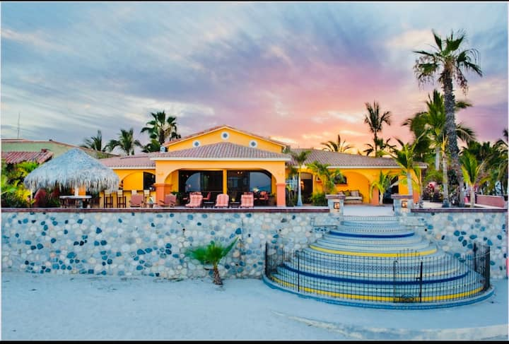
Get ready for world-class coaching, ocean views, RZR adventures, chef-prepared meals, and a special Día de los Muertos celebration.
Nicolas & Jenny Radisay — Ignite Pickleball
Nicolas is also coaching bootcamp alongside “Baja” Joe. Find them for anything you need during the week.
Flights, the airport transfer, and your wheels for the week.
Three four-passenger RZR 1000s, provided by Sergio’s ATV — perfect for beach rides, arroyo trails, getting to and from the courts, and embracing the true Baja lifestyle.
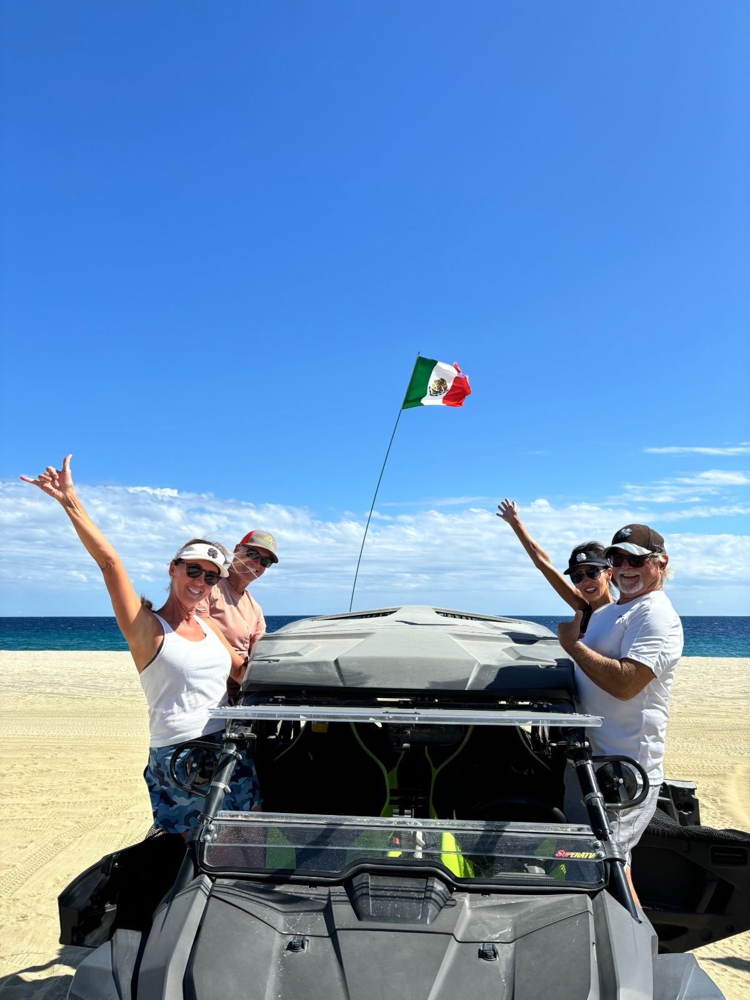
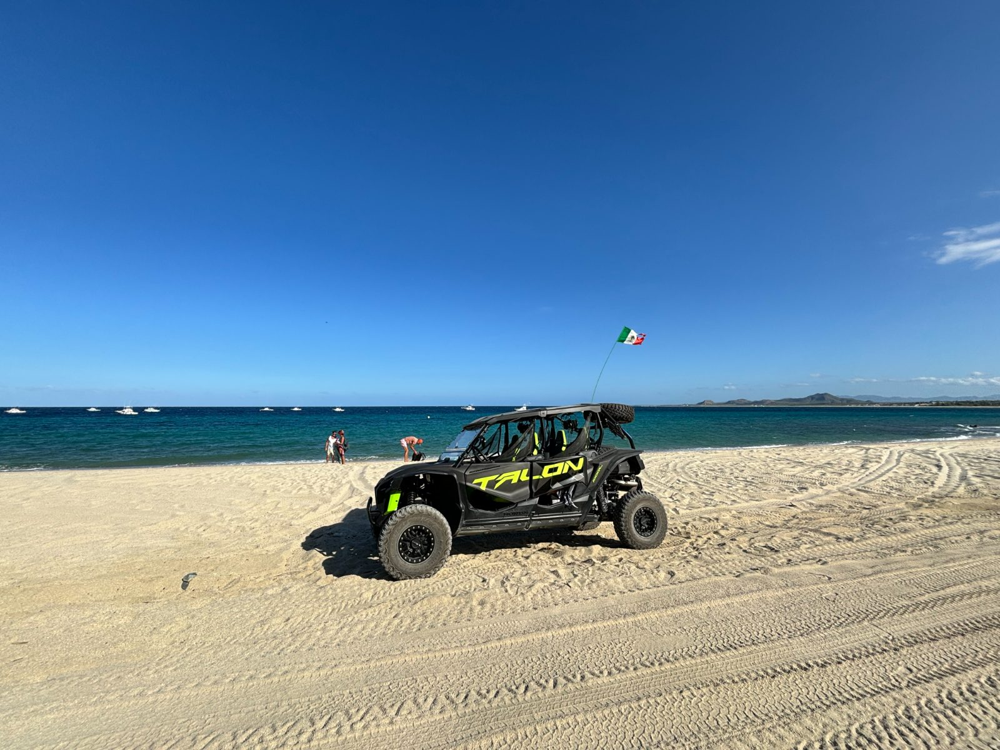
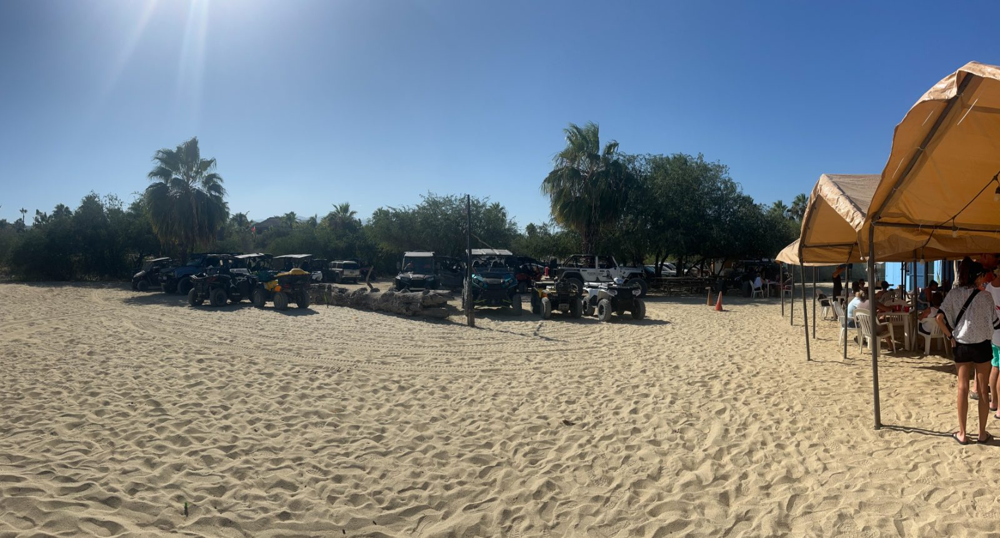
Bootcamp mornings, open afternoons, and two evenings you won’t want to miss.
One file, twelve events, reminders already built in — so your phone tells you that bootcamp starts in 45 minutes and that the fiesta is tomorrow night. Add it once and you can stop checking this page for times.
Tap Add the trip calendar, then Add All when Calendar opens. Reminders arrive as normal notifications.
Tap the button and choose Google Calendar. On a computer: Google Calendar → Settings → Import & export → Import, then pick the downloaded file.
Open the downloaded file and, when asked, put it in a new calendar. That way you can hide or delete the whole week in one go afterwards.
45 minutes before each bootcamp, 30 before social play, an hour and a day before both dinners, and 9 AM the day before travel days.
Everything is stored in Baja time (MST, UTC−7, no daylight saving). Your calendar converts automatically while you’re still at home.
Forward the downloaded file to anyone who needs it — handy for a partner who isn’t on this site. The link itself still needs the passcode.
Arrive SJD and transfer to Casa Afortunada. 6:00 PM — Welcome Dinner by Chef Lupi. Baja casual attire.
8:00–11:00 AM Ignite Pickleball bootcamp at Tres Palapas, with coaches Nic and “Baja” Joe · 11:00 AM hosted brunch at Tres Palapas · afternoon leisure / RZR time · 5:00–7:00 PM social pickleball. Dinner on your own.
Same rhythm as Monday.
Optional activities, extra pickleball, beach time, or RZR exploring. No meals included — see Explore for excursion and restaurant ideas.
Same rhythm as Monday.
Regular morning bootcamp, brunch and social play, then 6:00 PM — Día de los Muertos Dinner by Chef Rogelio Granado with live music by Pepon Music. Día de los Muertos theme attire.
Morning leisure, then transfer to SJD — or on to Cabo San Lucas for Brian & Shelly.
Four intensive mornings and social play every afternoon at one of Baja’s best courts.
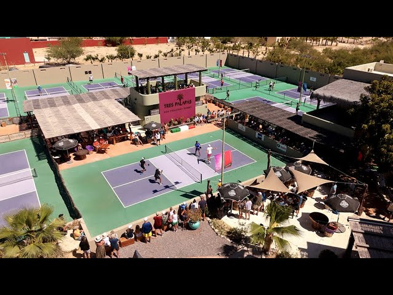
To be confirmed by the coaches.
Late October on the East Cape is about as good as Baja gets: hot bright mornings, the warmest water of the year, and evenings you can sit outside in a t-shirt. Here is the live forecast, and what to actually put in the bag.
Live forecast, refreshed each time you open this page. Days the forecast has not reached yet show the late-October average, clearly marked, and fill in with real numbers as the trip gets closer.
The checkboxes are the things you would actually regret forgetting — tick them off as you pack, and they save on this device. Everything marked Optional is just worth a thought.
A private beachside residence in Los Barriles — ocean views, pool, hot tub, and the sand right out front.
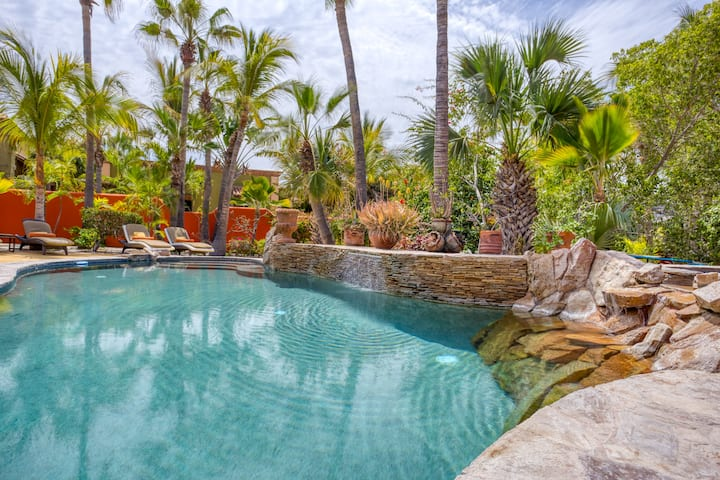
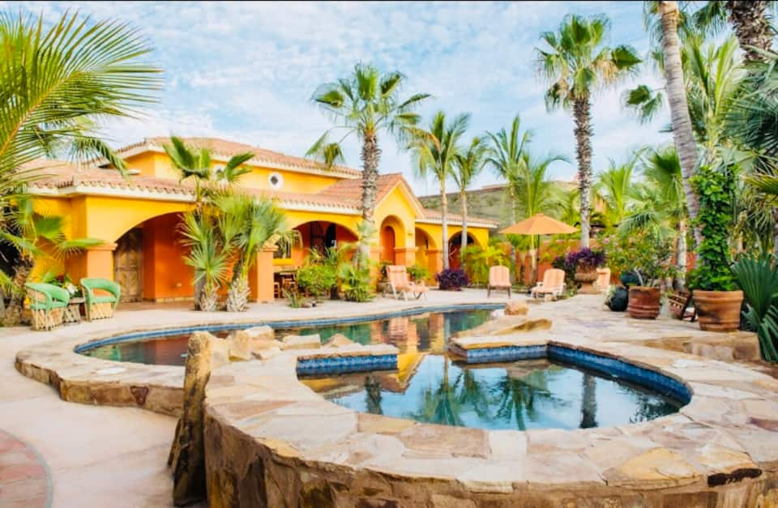
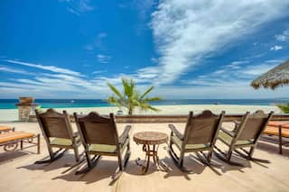
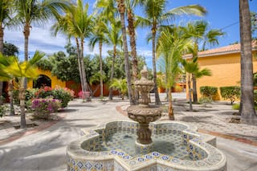
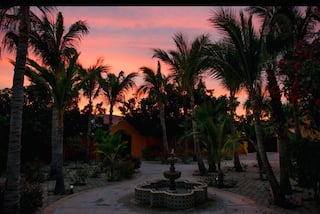
Two hosted dinners bookend the week, with a Mexican-style brunch on every bootcamp day.
Green chicken enchiladas · chiles rellenos · chicken tacos · rice · beans · guacamole · pico de gallo · tortilla chips.
Attire Baja casual
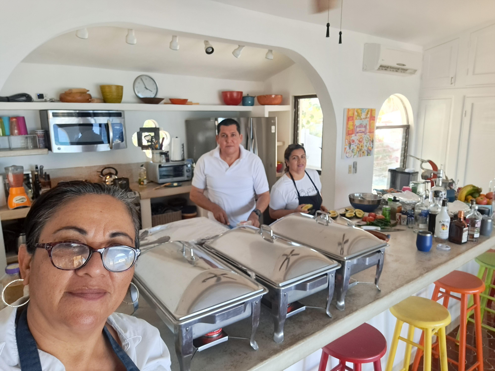
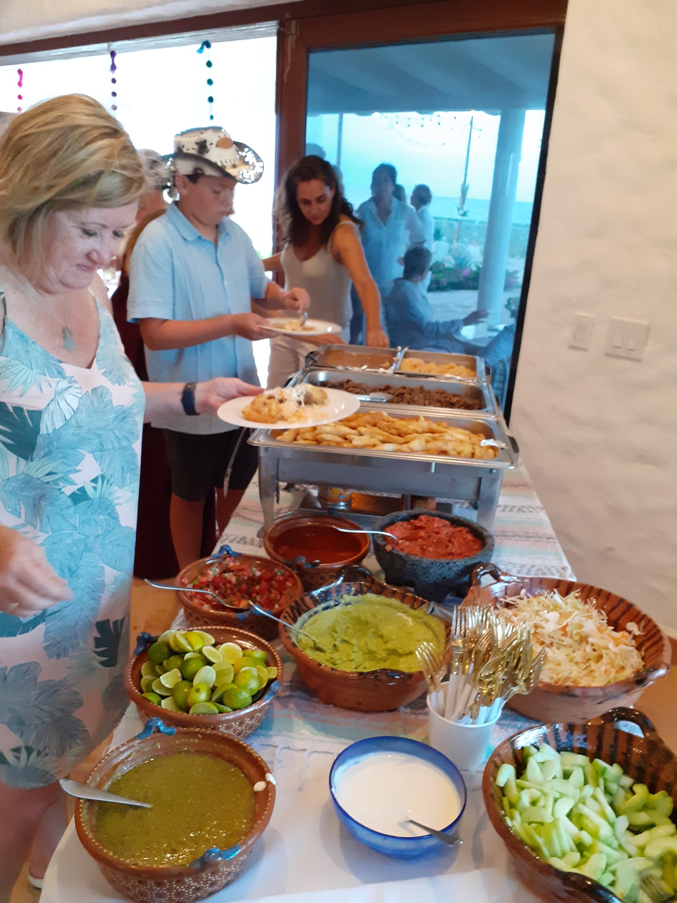
Mexican style, provided by Tres Palapas after the morning session.
A five-course evening: appetizers, salad, Sonoran-style beef or catch of the day, sides, and dessert. Pepon plays classic rock, reggae, blues, and 80s-to-now.
Attire Día de los Muertos theme — bring something festive
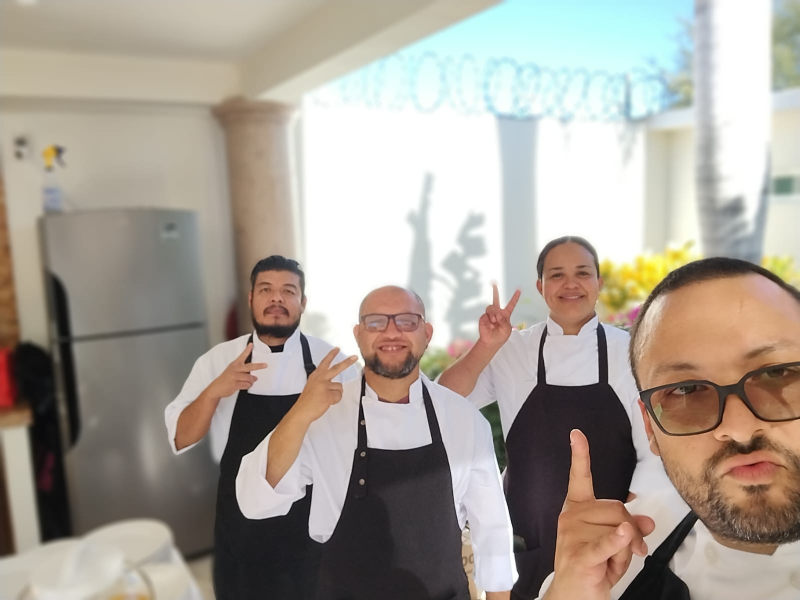
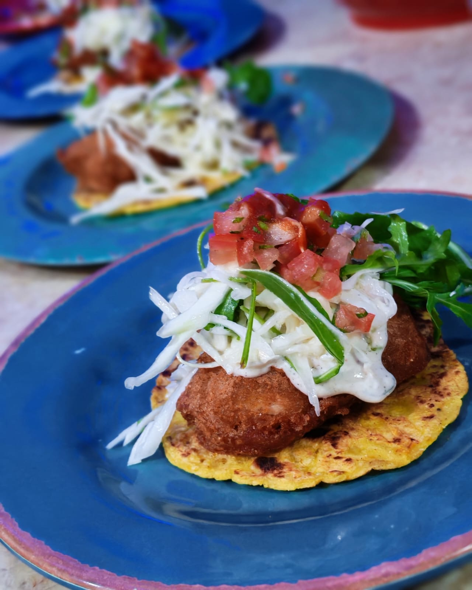
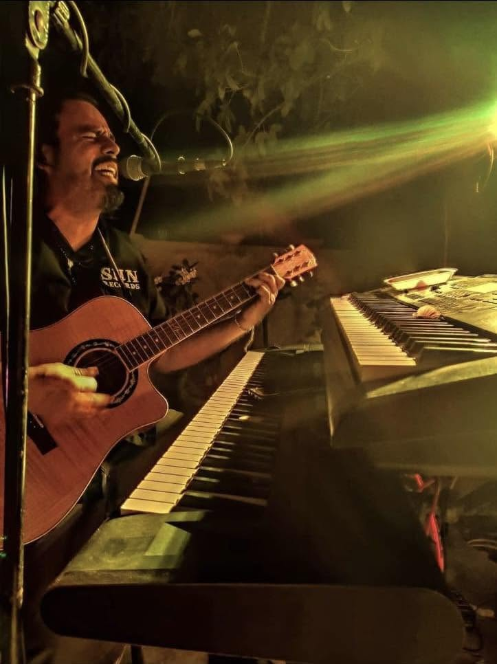
On your own. Restaurant recommendations are on the Explore page.
Wednesday is wide open, and afternoons are yours. A few ways to fill them:
No meals or activities included — a flex day for relaxation or adventure. Some may opt for extra pickleball.
Play at Las Palmas / Palmas Pickleball Resort — a larger facility, public welcome — or other local spots such as the Tony Krause Training Center.
palmaspickleballresort.comBook independently — arrange through your hosts, a local operator, or directly.
Not included — reserve ahead, especially in season.
Everyone joining the week, plus the numbers to keep handy.